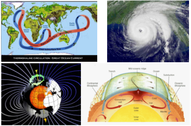

Turbulence
 |
A good model system for turbulent flows is Rayleigh-Benard convection, where a fluid is heated from below and cooled from above, in which case buoyant forces drive an instability that causes large-scale coherent flow structures in a turbulent background. This system models many natural turbulent flows which are responsible for much of the dynamics within planetary and stellar bodies, and is also one of the simplest systems exhibiting instabilities, pattern formation, and symmetry breaking. We performed Rayleigh-Benard convection experiments in an upright cylinder with a single large-scale circulation whose upright alignment does not follow the symmetry of the container. We identified two modes in which the flow changes direction spontaneously. These modes include an azimuthal rotation of the circulation plane, and cessations where the flow structure breaks up and restarts in a random orientation [Brown et al., PRL (2005), Brown & Ahlers, J. Fluid. Mech (2006)]. With careful measurements over the course of a year we observed that the Earth's Coriolis force creates a weak preference for the flow orientation and causes a net rotation of the flow structure, which holds the record for the smallest scale fluid flow in which the effect of Earth's Coriolis force has been measured [Brown & Ahlers, Phys. Fluids (2006)].
To describe cessations and rotations, we developed a model consisting of stochastic differential equations based on integrating the Navier-Stokes equations over the coherent structure [Brown & Ahlers, PRL (2007), Brown & Ahlers (2008a)]. In this model, the large-scale flow is characterized by a balance between buoyancy and viscous drag, and affected by a stochastic driving force representing the effect of turbulence. Occasionally the stochastic forces become large enough to slow the flow to a stop, resulting in a cessation. When this occurs, the momentum of the large-scale flow is lost, and it is more free to change its orientation. We have extended this model to describe the effects of various perturbations on the flow, in particular the response to the Coriolis force, asymmetric heating, and a tilted sample [Brown & Ahlers (2008a), Ji et al. (2020)]. We have extended this model to include a pressure forcing term due to the sidewall which allows it to describe the twisting and sloshing oscillation modes observed in these flows [Funfschilling et al. (2008), Brown & Ahlers, J. Fluid Mech. (2009)]. The stochastic model has proven robust to every perturbation applied to it, successfully capturing the different dynamics observed in these experiments, and achieving impressive quantitative success for a low-dimensional model.
Our current focus is to use experiments to generalize this low-dimensional model for the dynamics of large-scale flow structures to apply it to flows with multiple rolls of different shapes, arbitrary geometries, and different boundary conditions with a goal of eventually developing easily solvable models of more realistic geophysical systems including climate, weather, and even planetary dynamos. We have developed a prediction for a potential term that is a direct function of the container shape, and is general enough that it can predict the potential for arbitrary boundary shapes that would contain single convection rolls. In collaboration with Penger Tong's group at the Hong Kong University of Science and Technology, we have shown that the model can accurately reproduce the different dynamics found in horizontally aligned cylinders of different aspect ratios [Song et al. (2014)] and cubes [Bai et al.(2016), Ji & Brown (2020a)]. These dynamics include oscillations of the flow around potential minima at a corner with a different structure than in upright cylinders, and stochastic switching between corners of the cell as the system crosses the potential barrier to get from one potential minimum to another. In horizontal cylinders, there is also a periodic oscillation between nearby corners in a wider potential well. We found an oscillation in the shape of the temperature profile that can be explained by a change in the pathlength of the flow at different orientations along the heating and cooling plates as the flow orientation oscillates around a corner [Ji & Brown (2020b)]. We have included the effects of interactions between neighboring rolls due to turbulent thermal diffusion of heat between the rolls. This can predict the stability of counter-rotating and co-rotating states in different conditions. Importantly, it suggests the same turbulent thermal diffusivity parameter that characterizes heat transport in other low-dimensional models controls the interaction between flow structures in buoyancy-driven convection. [Brown & Ji (2023)]
Heat transport
The amount of heat transported in turbulent flows is important in heating and cooling applications ranging from engines and power plants to geophysical processes. Heat transport is characterized by a dimensionless Nusselt number which is the ratio of convective to conductive heat transport; turbulence can enhance transport by orders of magnitude over the conductive contribution. We made high-resolution measurements of Nusselt numbers to test the Grossman-Lohse model of scaling in convection [Nikolaenko et al., J. Fluid Mech. (2005), Funfschilling et al., J. Fluid Mech. (2005)]. To improve the precision of these and other comparisons, we quantified corrections due to non-Boussinesq effects (variation of fluid properties with temperature)[Ahlers et al., J. Fluid Mech. (2006), Brown & Ahlers, Europhysics Letters (2007)], a correction due to the reduction of heat flux through the fluid for end plates of finite conductivity [Brown et al., Phys. Fluids (2005)], and the effects of tilting the sample [Ahlers et al., J. Fluid Mech. (2005)]. We also measured the circulation frequency in order to test scalings of the Reynolds number in the Grossman-Lohse scaling model [Brown et al., J. Stat. Mech. (2007)]. Altogether this work made a major contribution to testing and establishing the Grossman-Lohse model as the current standard for heat transport in turbulent convection.